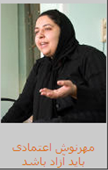

|
|

بنویس مهرنوش! روی سربرگ های«النجات فی الصدق» بنویس: ما چند زن بودیم، سوختیم ولی اراده کرده ایم نسازیم / نفیسه آزاد
جمعه13 آذر 1388

تغییر برای برابری - نفیسه آزاد -به مادرت گفته اند هنوز تحقیقاتشان از تو تمام نشده و مادرت با حیرت از من می پرسد مگر مهرنوش چکار می کرده که دو هفته تحقیقات برای کارهایش لازم است؟
بنویس مهرنوش،روی آن سربرگ های «النجات فی الصدق» بنویس، شاید این بار واقعا اگر راست را نوشتی رها شدی ، بنویس خواهر جان، بنویس که ما چند زن بودیم، آرزومند دنیایی زنانه تر، برابرتر، بنویس به تنگ آمده بودیم از این بی حرمتی ها از این تبعیض ها بنویس ما می پنداریم که زندگی بهتر در گرو برابری است
بنویس ما آرزو داشتیم، آرزو که زنانی گریخته، وامانده، ضربه دیده یا شکسته بر اثر تحقیر جنس و جنسیت نداشته باشیم، برگه های « النجات فی الصدق » را پر کن از سونوشت زنانی که در کارگاه های خشونت ات تن کبود و روح له شده شان را دیدی ، بنویس از زنانی که نشستند و سوختند و ساختند و بنویس از ما، از همه ی ما که سوختیم ولی اراده کرده ایم که نسازیم ، روی برگه های تک نویسی را پر کن از اسم ها ، وای مهرنوش می دانی چند اسم باید بنویسی تا تحقیقات کامل شود؟ از صد سال پیش باید شروع کنی ، باید اسم ها را دقیق و مو به مو بنویسی چرا که نجات در صداقت است، بنویس ما همان ها بودیم که صد سال پیش در همین اصفهان سنگ بارانمان کردید چرا که برای خودمان و دخترانمان مدرسه می خواستیم، امروز دخترانتان مدرسه می روند، تحصیل می کنند و شما دختران همان مادران را زندانی می¬کنید، ممنوع الملاقات می کنید تا برای دخترانشان، خواهرانشان، قانون برابر نخواهند، زندگی امن نخواهند، خانه¬ی امن نخواهند. بنویس و بیا تا همین امروز ، اسم همه مان را بنویس، تک به تک روی برگه های تک نویسی همان طور که روی صندلی رو به دیوار نشسته ای بنویس، بنویس از آرزوهایمان، از امیدهایمان بنویس، بنویس هر برگه ی امضا با چه شوری با چه زحمتی پر می شود، بنویس در چشمهای منتظر زنان این کشور امید هست، امید به بهبود، امید به تغییر، تغییر برای برابری.اسامی مان را فراموش نکرده ای که؟ ده ها، صدها، هزاران زن با امید، با کفش های آهنین، ما را به خاطر بیاور! از آن روز که برای حق رای خودمان را زیر کالسکه شاه انداختیم و به دروازه های مجلس بستیم، تا امروز که زندانی هستیم و هنوز امیدوار، بنویس زن بودن یعنی قدم به قدم ساختن و پیراستن و جلو آمدن، بنویس ما 18 ساله ایم، 30 ساله ایم، 60 ساله ایم، در روسیه مثله می شویم، در آفریقا خشونت می بینیم و ختنه می شویم، در ایران هر روز قربانی خشونت عریان قانونی هستیم که برای ما ننوشته اند و همه جای این دنیای مردسالار، جنس دومیم! اما هنوز هزاران هزار واحد انرژی در ماست، بنویس ما برای دختران و پسران مان ارثیه ای می خواهیم که «باقیات الصالحات» باشد، زاینده باشد، ابدی باشد.
برگه هایت را پر کن خواهر جان، ساعت ها وقت می برد می دانم، از زن هایی بنویس که کودکان در زهدان خود پرورش داده را برای حفظ آب و خاکی به مسلخ فرستادند که خود سهمی از آن نداشتند چون زن بودند، از نوعروسان 13 ساله بنویس، نشانی دادگاه های خانواده را فراموش نکنی، خواهر خوبم که می دانم تک تک آنها را می شناسی و می دانم که از پله هایش چند بار و چندین بار همراه با زنان کارگاهت بالا و پایین رفته ای. از روزهای پریشانی و شب های بیداری مادرانی بنویس که کودکانشان را به اجبار قانون از دست داده اند، گم کرده اند، از چهره های افسرده و نگاه بی فروغشان بنویس. بنویس قصه های مادربزرگ های ما پر است از سرنوشت زندان و تنهایی و ناکامی که در همه جای روحمان تکثیر شده.
«النجات فی الصدق» یعنی همین! نمی دانم چرا به مادرت می گویند تو همکاری نمی کنی؟ تاریخ بی قراری مان را فراموش کرده ای یا سکوت کردی تا گوش های بسته بر حرف تغییر را آزار ندهی. بنویس که تکانه های روح این همه زن با توست، این همه زن که گاهی همه عمر زندانی بوده اند، در خانه هایشان نشسته اند، در خانه هایی که هر لحظه می تواند زندان شود و به تو فکر می کنند، با تو نفس می کشند و برایت امیدوارند.
هر بار بر این برگه های خالی نقش ما را بنویس، برای آنها بنویس ما زنان همیشه با دست های خالی به نبرد طبیعت و جامعه رفته ایم ، بنویس این ما هستیم، مادران و دختران و همسران و زنان و زنان با دست های خالی! بنویس دنیای زنانه ی ما برای نبرد خود پولی نمی خواهد، برای حفظ قدرتش زن بودن کافی است حمایت بیگانه نمی خواهد، بنویس ما و خواهرانمان برای هیچ ثروتی و هیچ قدرتی در جهان نقشه ای نداریم، سلاح و سیاست ورزی و دروغ نیاز نداریم ، بنویس ما زایندگان دنیای آرامش و صلحیم و استوار بر مرزهای انسانی مان که ما را به همه زنان در همه جای جهان پیوند می دهد.